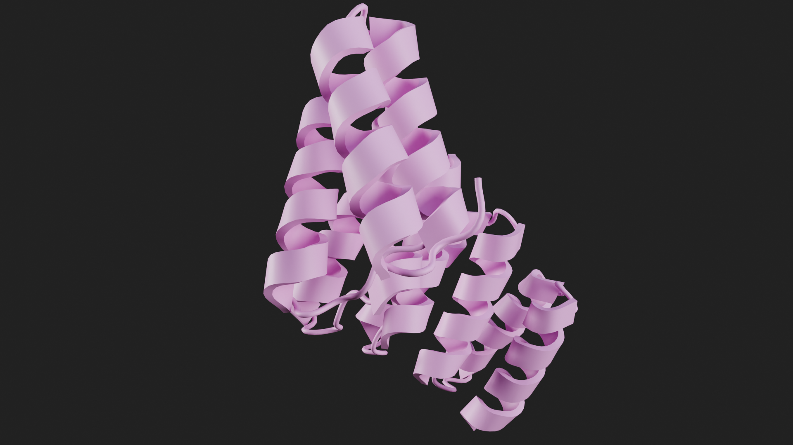
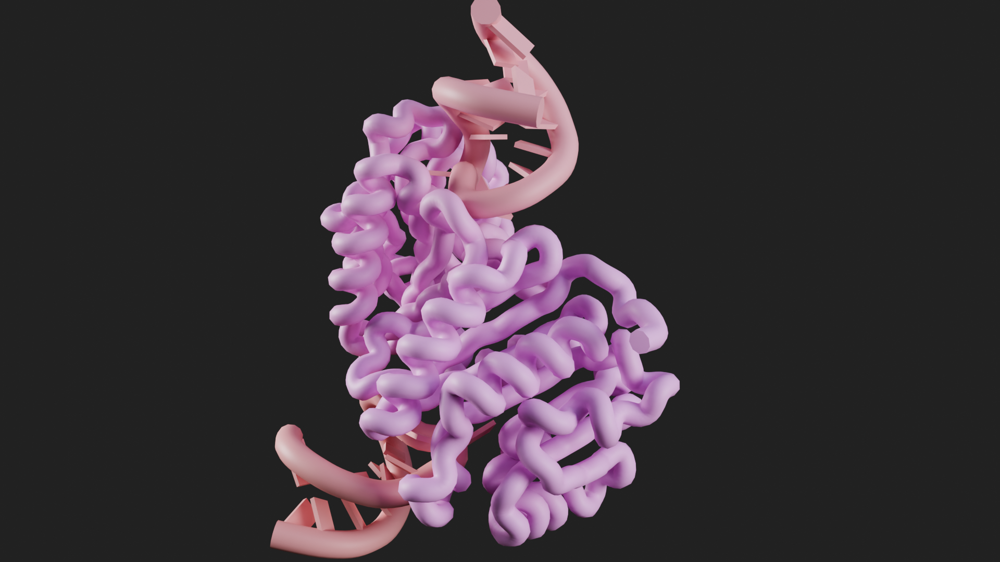
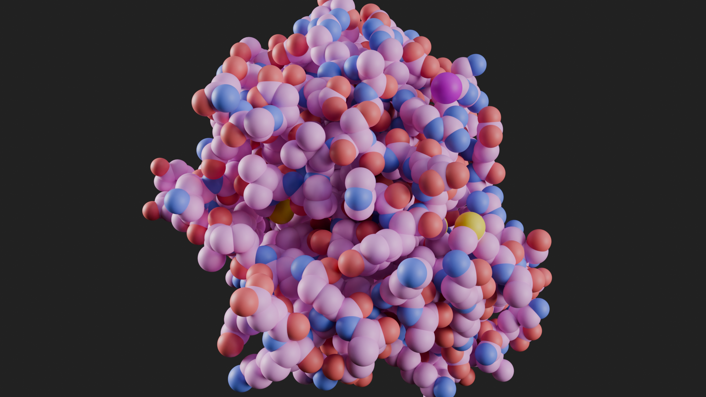

import molecularnodes as mn
import numpy as np
# we currently have to manually register a lot of the internals with Blender
mn.register()
mn.template.install()
canvas = mn.Canvas(resolution=(720, 480))
# create a 'Molecule' object, by fetching a structure and parsing it into the scene
mol = mn.Molecule.fetch("6N2Y").add_style('ribbon')Python API
Introduction to the APi and the quirks of programming in Blender
The API is Unstable
Molecular Nodes is designed and created first and foremost as an add-on for Blender, so the API can at times seem a bit quirky and for the time being is not to be considered stable.
Molecular Nodes is versioned to match Blender versions, so while we are currently up to “4.2.*“, the API should be not be consired to be that mature.
This is how we can use the API.
The Molecule Object
The Molecule object has the original data, as well as the Blender object associated with.
The different methods that are associated mostly interact with the Blender object, which is accessible via the mol.object, and the data is accessible via mol.array, which is a biotite.AtomArray object.
print(f"{len(mol)=}")
print(f"{mol.object=}")
print(f"{mol.array[0][:10]=}")len(mol)=35043
mol.object=bpy.data.objects['6N2Y']
mol.array[0][:10]=array([
Atom(np.array([165.781, 162.453, 265.828], dtype=float32), chain_id="A", res_id=2, ins_code="", res_name="SER", hetero=False, atom_name="N", element="N", atom_id=1, b_factor=99.36, occupancy=1.0, sec_struct=3, entity_id=0, mass=14.0067, atomic_number=7, res_name_int=15, chain_id_int=0, ures_id=0, vdw_radii=0.015500000000000002, atom_name_int=1, charge=-0.4157, lipophobicity=-0.49, Color=[0.18823529 0.31372549 0.97254902 1. ], is_alpha_carbon=False, is_solvent=False, is_backbone=True, is_nucleic=False, is_peptide=True, is_hetero=False, is_side_chain=False, is_carb=False),
Atom(np.array([165.694, 163.886, 266.083], dtype=float32), chain_id="A", res_id=2, ins_code="", res_name="SER", hetero=False, atom_name="CA", element="C", atom_id=2, b_factor=99.36, occupancy=1.0, sec_struct=3, entity_id=0, mass=12.0107, atomic_number=6, res_name_int=15, chain_id_int=0, ures_id=0, vdw_radii=0.017, atom_name_int=2, charge=-0.0249, lipophobicity=0.02, Color=[0.83921569 0.35686275 0.35686275 1. ], is_alpha_carbon=True, is_solvent=False, is_backbone=True, is_nucleic=False, is_peptide=True, is_hetero=False, is_side_chain=False, is_carb=False),
Atom(np.array([166.549, 164.278, 267.281], dtype=float32), chain_id="A", res_id=2, ins_code="", res_name="SER", hetero=False, atom_name="C", element="C", atom_id=3, b_factor=99.36, occupancy=1.0, sec_struct=3, entity_id=0, mass=12.0107, atomic_number=6, res_name_int=15, chain_id_int=0, ures_id=0, vdw_radii=0.017, atom_name_int=3, charge=0.5973, lipophobicity=-0.61, Color=[0.83921569 0.35686275 0.35686275 1. ], is_alpha_carbon=False, is_solvent=False, is_backbone=True, is_nucleic=False, is_peptide=True, is_hetero=False, is_side_chain=False, is_carb=False),
Atom(np.array([166.099, 165.005, 268.165], dtype=float32), chain_id="A", res_id=2, ins_code="", res_name="SER", hetero=False, atom_name="O", element="O", atom_id=4, b_factor=99.36, occupancy=1.0, sec_struct=3, entity_id=0, mass=15.9994, atomic_number=8, res_name_int=15, chain_id_int=0, ures_id=0, vdw_radii=0.0152, atom_name_int=4, charge=-0.5679, lipophobicity=-0.58, Color=[1. 0.05098039 0.05098039 1. ], is_alpha_carbon=False, is_solvent=False, is_backbone=True, is_nucleic=False, is_peptide=True, is_hetero=False, is_side_chain=False, is_carb=False),
Atom(np.array([164.24 , 164.303, 266.314], dtype=float32), chain_id="A", res_id=2, ins_code="", res_name="SER", hetero=False, atom_name="CB", element="C", atom_id=5, b_factor=99.36, occupancy=1.0, sec_struct=3, entity_id=0, mass=12.0107, atomic_number=6, res_name_int=15, chain_id_int=0, ures_id=0, vdw_radii=0.017, atom_name_int=5, charge=0.2117, lipophobicity=0.45, Color=[0.83921569 0.35686275 0.35686275 1. ], is_alpha_carbon=False, is_solvent=False, is_backbone=False, is_nucleic=False, is_peptide=True, is_hetero=False, is_side_chain=True, is_carb=False),
Atom(np.array([164.147, 165.689, 266.594], dtype=float32), chain_id="A", res_id=2, ins_code="", res_name="SER", hetero=False, atom_name="OG", element="O", atom_id=6, b_factor=99.36, occupancy=1.0, sec_struct=3, entity_id=0, mass=15.9994, atomic_number=8, res_name_int=15, chain_id_int=0, ures_id=0, vdw_radii=0.0152, atom_name_int=9, charge=-0.6546, lipophobicity=-0.99, Color=[1. 0.05098039 0.05098039 1. ], is_alpha_carbon=False, is_solvent=False, is_backbone=False, is_nucleic=False, is_peptide=True, is_hetero=False, is_side_chain=True, is_carb=False),
Atom(np.array([167.783, 163.792, 267.302], dtype=float32), chain_id="A", res_id=3, ins_code="", res_name="ILE", hetero=False, atom_name="N", element="N", atom_id=7, b_factor=93.91, occupancy=1.0, sec_struct=3, entity_id=0, mass=14.0067, atomic_number=7, res_name_int=9, chain_id_int=0, ures_id=1, vdw_radii=0.015500000000000002, atom_name_int=1, charge=-0.4157, lipophobicity=-0.49, Color=[0.18823529 0.31372549 0.97254902 1. ], is_alpha_carbon=False, is_solvent=False, is_backbone=True, is_nucleic=False, is_peptide=True, is_hetero=False, is_side_chain=False, is_carb=False),
Atom(np.array([168.702, 164.083, 268.395], dtype=float32), chain_id="A", res_id=3, ins_code="", res_name="ILE", hetero=False, atom_name="CA", element="C", atom_id=8, b_factor=93.91, occupancy=1.0, sec_struct=3, entity_id=0, mass=12.0107, atomic_number=6, res_name_int=9, chain_id_int=0, ures_id=1, vdw_radii=0.017, atom_name_int=2, charge=-0.0597, lipophobicity=0.02, Color=[0.83921569 0.35686275 0.35686275 1. ], is_alpha_carbon=True, is_solvent=False, is_backbone=True, is_nucleic=False, is_peptide=True, is_hetero=False, is_side_chain=False, is_carb=False),
Atom(np.array([169.366, 165.434, 268.145], dtype=float32), chain_id="A", res_id=3, ins_code="", res_name="ILE", hetero=False, atom_name="C", element="C", atom_id=9, b_factor=93.91, occupancy=1.0, sec_struct=3, entity_id=0, mass=12.0107, atomic_number=6, res_name_int=9, chain_id_int=0, ures_id=1, vdw_radii=0.017, atom_name_int=3, charge=0.5973, lipophobicity=-0.61, Color=[0.83921569 0.35686275 0.35686275 1. ], is_alpha_carbon=False, is_solvent=False, is_backbone=True, is_nucleic=False, is_peptide=True, is_hetero=False, is_side_chain=False, is_carb=False),
Atom(np.array([169.633, 165.817, 266.999], dtype=float32), chain_id="A", res_id=3, ins_code="", res_name="ILE", hetero=False, atom_name="O", element="O", atom_id=10, b_factor=93.91, occupancy=1.0, sec_struct=3, entity_id=0, mass=15.9994, atomic_number=8, res_name_int=9, chain_id_int=0, ures_id=1, vdw_radii=0.0152, atom_name_int=4, charge=-0.5679, lipophobicity=-0.58, Color=[1. 0.05098039 0.05098039 1. ], is_alpha_carbon=False, is_solvent=False, is_backbone=True, is_nucleic=False, is_peptide=True, is_hetero=False, is_side_chain=False, is_carb=False)
])mol.named_attribute('chain_id')array([0, 0, 0, ..., 5, 5, 5])mol.positionarray([[1.65780997, 1.62452996, 2.6582799 ],
[1.65693998, 1.63885999, 2.66083002],
[1.66548991, 1.64277995, 2.67281008],
...,
[1.37845004, 1.57386994, 2.16669989],
[1.38423002, 1.5675199 , 2.17714 ],
[1.39749992, 1.55744004, 2.29000998]])Updating the Atom Positions
mol.position -= mol.centroid()
mol.positionarray([[-0.0113072 , -0.03149763, 0.58922708],
[-0.01217719, -0.0171676 , 0.59177721],
[-0.00362726, -0.01324764, 0.60375726],
...,
[-0.29066715, -0.08215764, 0.09764704],
[-0.28488716, -0.08850768, 0.10808715],
[-0.27161726, -0.09858754, 0.22095713]])codes = ["4ozs", "8H1B", "8U8W"]
styles = ['cartoon', 'ribbon', 'spheres']
materials = ['MN Ambient Occlusion', 'MN Default', 'MN Ambient Occlusion']
for code, style, material in zip(codes, styles, materials):
canvas.scene_reset(engine=mn.scene.Cycles(samples=32))
mol = mn.Molecule.fetch(code)
canvas.frame_object(mol)
mol.add_style(style)
canvas.snapshot()Fra:1 Mem:53.71M (Peak 55.00M) | Time:00:00.01 | Mem:0.02M, Peak:0.02M | Scene, ViewLayer | Synchronizing object | 4ozs
Fra:1 Mem:54.84M (Peak 55.85M) | Time:00:00.01 | Mem:0.02M, Peak:0.02M | Scene, ViewLayer | Initializing
Fra:1 Mem:53.37M (Peak 55.85M) | Time:00:00.01 | Mem:0.02M, Peak:0.02M | Scene, ViewLayer | Updating Images | Loading forest_cave_1k.hdr
Fra:1 Mem:48.36M (Peak 71.37M) | Time:00:00.04 | Mem:8.02M, Peak:8.02M | Scene, ViewLayer | Waiting for render to start
Fra:1 Mem:48.36M (Peak 71.37M) | Time:00:00.04 | Mem:8.02M, Peak:8.02M | Scene, ViewLayer | Loading render kernels (may take a few minutes the first time)
Fra:1 Mem:48.36M (Peak 71.37M) | Time:00:00.07 | Mem:8.02M, Peak:8.02M | Scene, ViewLayer | Updating Scene
Fra:1 Mem:48.36M (Peak 71.37M) | Time:00:00.07 | Mem:8.02M, Peak:8.02M | Scene, ViewLayer | Updating Shaders
Fra:1 Mem:48.44M (Peak 71.37M) | Time:00:00.07 | Mem:8.03M, Peak:8.03M | Scene, ViewLayer | Updating Procedurals
Fra:1 Mem:48.44M (Peak 71.37M) | Time:00:00.07 | Mem:8.03M, Peak:8.03M | Scene, ViewLayer | Updating Background
Fra:1 Mem:48.44M (Peak 71.37M) | Time:00:00.07 | Mem:8.03M, Peak:8.03M | Scene, ViewLayer | Updating Camera
Fra:1 Mem:48.44M (Peak 71.37M) | Time:00:00.07 | Mem:8.03M, Peak:8.03M | Scene, ViewLayer | Updating Meshes Flags
Fra:1 Mem:48.44M (Peak 71.37M) | Time:00:00.07 | Mem:8.03M, Peak:8.03M | Scene, ViewLayer | Updating Objects
Fra:1 Mem:48.44M (Peak 71.37M) | Time:00:00.07 | Mem:8.03M, Peak:8.03M | Scene, ViewLayer | Updating Objects | Copying Transformations to device
Fra:1 Mem:48.44M (Peak 71.37M) | Time:00:00.07 | Mem:8.03M, Peak:8.03M | Scene, ViewLayer | Updating Objects | Applying Static Transformations
Fra:1 Mem:48.44M (Peak 71.37M) | Time:00:00.07 | Mem:8.03M, Peak:8.03M | Scene, ViewLayer | Updating Particle Systems
Fra:1 Mem:48.44M (Peak 71.37M) | Time:00:00.07 | Mem:8.03M, Peak:8.03M | Scene, ViewLayer | Updating Particle Systems | Copying Particles to device
Fra:1 Mem:48.44M (Peak 71.37M) | Time:00:00.07 | Mem:8.03M, Peak:8.03M | Scene, ViewLayer | Updating Meshes
Fra:1 Mem:48.65M (Peak 71.37M) | Time:00:00.07 | Mem:8.03M, Peak:8.03M | Scene, ViewLayer | Updating Mesh | Computing attributes
Fra:1 Mem:48.92M (Peak 71.37M) | Time:00:00.07 | Mem:8.03M, Peak:8.03M | Scene, ViewLayer | Updating Mesh | Copying Attributes to device
Fra:1 Mem:48.65M (Peak 71.37M) | Time:00:00.13 | Mem:8.32M, Peak:8.32M | Scene, ViewLayer | Updating Scene BVH | Building
Fra:1 Mem:48.65M (Peak 71.37M) | Time:00:00.13 | Mem:8.32M, Peak:8.32M | Scene, ViewLayer | Updating Scene BVH | Building BVH
Fra:1 Mem:49.41M (Peak 71.37M) | Time:00:00.14 | Mem:8.32M, Peak:8.32M | Scene, ViewLayer | Updating Scene BVH | Packing BVH triangles and strands
Fra:1 Mem:49.46M (Peak 71.37M) | Time:00:00.14 | Mem:8.32M, Peak:8.32M | Scene, ViewLayer | Updating Scene BVH | Packing BVH nodes
Fra:1 Mem:49.44M (Peak 71.37M) | Time:00:00.14 | Mem:8.32M, Peak:8.32M | Scene, ViewLayer | Updating Scene BVH | Copying BVH to device
Fra:1 Mem:49.04M (Peak 71.37M) | Time:00:00.14 | Mem:8.79M, Peak:8.79M | Scene, ViewLayer | Updating Mesh | Computing normals
Fra:1 Mem:49.61M (Peak 71.37M) | Time:00:00.14 | Mem:8.79M, Peak:8.79M | Scene, ViewLayer | Updating Mesh | Copying Mesh to device
Fra:1 Mem:49.04M (Peak 71.37M) | Time:00:00.14 | Mem:9.42M, Peak:9.42M | Scene, ViewLayer | Updating Objects Flags
Fra:1 Mem:49.04M (Peak 71.37M) | Time:00:00.14 | Mem:9.42M, Peak:9.42M | Scene, ViewLayer | Updating Primitive Offsets
Fra:1 Mem:49.04M (Peak 71.37M) | Time:00:00.14 | Mem:9.42M, Peak:9.42M | Scene, ViewLayer | Updating Images
Fra:1 Mem:49.04M (Peak 71.37M) | Time:00:00.14 | Mem:9.42M, Peak:9.42M | Scene, ViewLayer | Updating Camera Volume
Fra:1 Mem:49.04M (Peak 71.37M) | Time:00:00.14 | Mem:9.42M, Peak:9.42M | Scene, ViewLayer | Updating Lookup Tables
Fra:1 Mem:48.96M (Peak 71.37M) | Time:00:00.14 | Mem:9.51M, Peak:9.51M | Scene, ViewLayer | Updating Lights
Fra:1 Mem:48.96M (Peak 71.37M) | Time:00:00.14 | Mem:9.51M, Peak:9.51M | Scene, ViewLayer | Updating Lights | Importance map
Fra:1 Mem:48.95M (Peak 304.96M) | Time:00:00.34 | Mem:73.57M, Peak:233.53M | Scene, ViewLayer | Updating Lights | Computing tree
Fra:1 Mem:48.95M (Peak 304.96M) | Time:00:00.34 | Mem:73.58M, Peak:233.53M | Scene, ViewLayer | Updating Integrator
Fra:1 Mem:48.95M (Peak 304.96M) | Time:00:00.34 | Mem:74.58M, Peak:233.53M | Scene, ViewLayer | Updating Film
Fra:1 Mem:49.04M (Peak 304.96M) | Time:00:00.34 | Mem:74.48M, Peak:233.53M | Scene, ViewLayer | Updating Lookup Tables
Fra:1 Mem:48.95M (Peak 304.96M) | Time:00:00.34 | Mem:74.58M, Peak:233.53M | Scene, ViewLayer | Updating Baking
Fra:1 Mem:48.95M (Peak 304.96M) | Time:00:00.34 | Mem:74.58M, Peak:233.53M | Scene, ViewLayer | Updating Device | Writing constant memory
Fra:1 Mem:48.95M (Peak 304.96M) | Time:00:00.35 | Mem:74.58M, Peak:233.53M | Scene, ViewLayer | Loading denoising kernels (may take a few minutes the first time)
Fra:1 Mem:48.95M (Peak 304.96M) | Time:00:00.36 | Mem:2858.58M, Peak:2858.58M | Scene, ViewLayer | Sample 0/256 (Using optimized kernels)
Fra:1 Mem:48.95M (Peak 304.96M) | Time:00:00.60 | Remaining:01:00.81 | Mem:3008.89M, Peak:3008.89M | Scene, ViewLayer | Sample 1/256 (Using optimized kernels)
Fra:1 Mem:48.95M (Peak 304.96M) | Time:00:02.55 | Remaining:00:04.81 | Mem:3008.90M, Peak:3008.90M | Scene, ViewLayer | Sample 80/256 (Using optimized kernels)
Fra:1 Mem:48.95M (Peak 304.96M) | Time:00:02.90 | Remaining:00:04.23 | Mem:3008.90M, Peak:3008.90M | Scene, ViewLayer | Sample 96/256 (Using optimized kernels)
Fra:1 Mem:48.95M (Peak 304.96M) | Time:00:03.24 | Remaining:00:03.70 | Mem:3008.90M, Peak:3008.90M | Scene, ViewLayer | Sample 112/256 (Using optimized kernels)
Fra:1 Mem:48.95M (Peak 304.96M) | Time:00:03.59 | Remaining:00:03.22 | Mem:3008.90M, Peak:3008.90M | Scene, ViewLayer | Sample 128/256 (Using optimized kernels)
Fra:1 Mem:48.95M (Peak 304.96M) | Time:00:03.93 | Remaining:00:02.77 | Mem:3008.90M, Peak:3008.90M | Scene, ViewLayer | Sample 144/256 (Using optimized kernels)
Fra:1 Mem:48.95M (Peak 304.96M) | Time:00:04.27 | Remaining:00:02.34 | Mem:3008.90M, Peak:3008.90M | Scene, ViewLayer | Sample 160/256 (Using optimized kernels)
Fra:1 Mem:48.95M (Peak 304.96M) | Time:00:04.60 | Remaining:00:01.92 | Mem:3008.90M, Peak:3008.90M | Scene, ViewLayer | Sample 176/256 (Using optimized kernels)
Fra:1 Mem:48.95M (Peak 304.96M) | Time:00:04.94 | Remaining:00:01.52 | Mem:3008.90M, Peak:3008.90M | Scene, ViewLayer | Sample 192/256 (Using optimized kernels)
Fra:1 Mem:48.95M (Peak 304.96M) | Time:00:05.27 | Remaining:00:01.13 | Mem:3008.90M, Peak:3008.90M | Scene, ViewLayer | Sample 208/256 (Using optimized kernels)
Fra:1 Mem:48.95M (Peak 304.96M) | Time:00:05.60 | Remaining:00:00.74 | Mem:3008.90M, Peak:3008.90M | Scene, ViewLayer | Sample 224/256 (Using optimized kernels)
Fra:1 Mem:48.95M (Peak 304.96M) | Time:00:05.93 | Remaining:00:00.37 | Mem:3008.90M, Peak:3008.90M | Scene, ViewLayer | Sample 240/256 (Using optimized kernels)
Fra:1 Mem:112.24M (Peak 304.96M) | Time:00:06.79 | Mem:3008.91M, Peak:3056.38M | Scene, ViewLayer | Sample 256/256 (Using optimized kernels)
Fra:1 Mem:112.24M (Peak 304.96M) | Time:00:06.79 | Mem:3008.91M, Peak:3056.38M | Scene, ViewLayer | Finished
Saved: '/var/folders/r4/ym_ncgbd3qddtxqvrmhps8q80000gn/T/tmpgmpb_tz_/snapshot.png'
Time: 00:06.99 (Saving: 00:00.16)

Fra:1 Mem:43.75M (Peak 47.50M) | Time:00:00.00 | Mem:0.02M, Peak:0.02M | Scene, ViewLayer | Synchronizing object | 8H1B
Fra:1 Mem:46.85M (Peak 51.66M) | Time:00:00.01 | Mem:0.02M, Peak:0.02M | Scene, ViewLayer | Initializing
Fra:1 Mem:42.35M (Peak 51.66M) | Time:00:00.01 | Mem:0.02M, Peak:0.02M | Scene, ViewLayer | Updating Images | Loading forest_cave_1k.hdr
Fra:1 Mem:42.71M (Peak 60.35M) | Time:00:00.02 | Mem:8.02M, Peak:8.02M | Scene, ViewLayer | Waiting for render to start
Fra:1 Mem:42.72M (Peak 60.35M) | Time:00:00.02 | Mem:8.02M, Peak:8.02M | Scene, ViewLayer | Loading render kernels (may take a few minutes the first time)
Fra:1 Mem:42.72M (Peak 60.35M) | Time:00:00.05 | Mem:8.02M, Peak:8.02M | Scene, ViewLayer | Updating Scene
Fra:1 Mem:42.72M (Peak 60.35M) | Time:00:00.05 | Mem:8.02M, Peak:8.02M | Scene, ViewLayer | Updating Shaders
Fra:1 Mem:42.80M (Peak 60.35M) | Time:00:00.05 | Mem:8.03M, Peak:8.03M | Scene, ViewLayer | Updating Procedurals
Fra:1 Mem:42.80M (Peak 60.35M) | Time:00:00.05 | Mem:8.03M, Peak:8.03M | Scene, ViewLayer | Updating Background
Fra:1 Mem:42.80M (Peak 60.35M) | Time:00:00.05 | Mem:8.03M, Peak:8.03M | Scene, ViewLayer | Updating Camera
Fra:1 Mem:42.80M (Peak 60.35M) | Time:00:00.05 | Mem:8.03M, Peak:8.03M | Scene, ViewLayer | Updating Meshes Flags
Fra:1 Mem:42.80M (Peak 60.35M) | Time:00:00.05 | Mem:8.03M, Peak:8.03M | Scene, ViewLayer | Updating Objects
Fra:1 Mem:42.80M (Peak 60.35M) | Time:00:00.05 | Mem:8.03M, Peak:8.03M | Scene, ViewLayer | Updating Objects | Copying Transformations to device
Fra:1 Mem:42.80M (Peak 60.35M) | Time:00:00.05 | Mem:8.03M, Peak:8.03M | Scene, ViewLayer | Updating Objects | Applying Static Transformations
Fra:1 Mem:42.80M (Peak 60.35M) | Time:00:00.05 | Mem:8.03M, Peak:8.03M | Scene, ViewLayer | Updating Particle Systems
Fra:1 Mem:42.80M (Peak 60.35M) | Time:00:00.05 | Mem:8.03M, Peak:8.03M | Scene, ViewLayer | Updating Particle Systems | Copying Particles to device
Fra:1 Mem:42.80M (Peak 60.35M) | Time:00:00.05 | Mem:8.03M, Peak:8.03M | Scene, ViewLayer | Updating Meshes
Fra:1 Mem:43.49M (Peak 60.35M) | Time:00:00.05 | Mem:8.03M, Peak:8.03M | Scene, ViewLayer | Updating Mesh | Computing attributes
Fra:1 Mem:44.11M (Peak 60.35M) | Time:00:00.05 | Mem:8.04M, Peak:8.04M | Scene, ViewLayer | Updating Mesh | Copying Attributes to device
Fra:1 Mem:43.49M (Peak 60.35M) | Time:00:00.11 | Mem:8.66M, Peak:8.66M | Scene, ViewLayer | Updating Geometry BVH Mesh 1/1 | Building BVH
Fra:1 Mem:43.49M (Peak 60.35M) | Time:00:00.11 | Mem:8.66M, Peak:8.66M | Scene, ViewLayer | Updating Geometry BVH Mesh 1/1 | Packing BVH triangles and strands
Fra:1 Mem:43.50M (Peak 60.35M) | Time:00:00.11 | Mem:8.66M, Peak:8.66M | Scene, ViewLayer | Updating Geometry BVH Mesh 1/1 | Packing BVH nodes
Fra:1 Mem:43.49M (Peak 60.35M) | Time:00:00.11 | Mem:8.66M, Peak:8.66M | Scene, ViewLayer | Updating Scene BVH | Building
Fra:1 Mem:43.49M (Peak 60.35M) | Time:00:00.11 | Mem:8.66M, Peak:8.66M | Scene, ViewLayer | Updating Scene BVH | Building BVH
Fra:1 Mem:46.11M (Peak 60.35M) | Time:00:00.11 | Mem:8.66M, Peak:8.66M | Scene, ViewLayer | Updating Scene BVH | Packing BVH triangles and strands
Fra:1 Mem:46.29M (Peak 60.35M) | Time:00:00.11 | Mem:8.66M, Peak:8.66M | Scene, ViewLayer | Updating Scene BVH | Packing BVH nodes
Fra:1 Mem:46.27M (Peak 60.35M) | Time:00:00.12 | Mem:8.66M, Peak:8.66M | Scene, ViewLayer | Updating Scene BVH | Copying BVH to device
Fra:1 Mem:44.88M (Peak 60.35M) | Time:00:00.12 | Mem:10.11M, Peak:10.11M | Scene, ViewLayer | Updating Mesh | Computing normals
Fra:1 Mem:46.46M (Peak 60.35M) | Time:00:00.12 | Mem:10.11M, Peak:10.11M | Scene, ViewLayer | Updating Mesh | Copying Mesh to device
Fra:1 Mem:44.88M (Peak 60.35M) | Time:00:00.12 | Mem:11.74M, Peak:11.74M | Scene, ViewLayer | Updating Objects Flags
Fra:1 Mem:44.88M (Peak 60.35M) | Time:00:00.12 | Mem:11.74M, Peak:11.74M | Scene, ViewLayer | Updating Primitive Offsets
Fra:1 Mem:44.88M (Peak 60.35M) | Time:00:00.12 | Mem:11.74M, Peak:11.74M | Scene, ViewLayer | Updating Images
Fra:1 Mem:44.88M (Peak 60.35M) | Time:00:00.12 | Mem:11.74M, Peak:11.74M | Scene, ViewLayer | Updating Camera Volume
Fra:1 Mem:44.88M (Peak 60.35M) | Time:00:00.12 | Mem:11.74M, Peak:11.74M | Scene, ViewLayer | Updating Lookup Tables
Fra:1 Mem:44.80M (Peak 60.35M) | Time:00:00.12 | Mem:11.83M, Peak:11.83M | Scene, ViewLayer | Updating Lights
Fra:1 Mem:44.80M (Peak 60.35M) | Time:00:00.12 | Mem:11.83M, Peak:11.83M | Scene, ViewLayer | Updating Lights | Importance map
Fra:1 Mem:44.79M (Peak 300.80M) | Time:00:00.31 | Mem:75.90M, Peak:235.85M | Scene, ViewLayer | Updating Lights | Computing tree
Fra:1 Mem:44.79M (Peak 300.80M) | Time:00:00.31 | Mem:75.90M, Peak:235.85M | Scene, ViewLayer | Updating Integrator
Fra:1 Mem:44.79M (Peak 300.80M) | Time:00:00.31 | Mem:76.90M, Peak:235.85M | Scene, ViewLayer | Updating Film
Fra:1 Mem:44.88M (Peak 300.80M) | Time:00:00.31 | Mem:76.81M, Peak:235.85M | Scene, ViewLayer | Updating Lookup Tables
Fra:1 Mem:44.79M (Peak 300.80M) | Time:00:00.31 | Mem:76.90M, Peak:235.85M | Scene, ViewLayer | Updating Baking
Fra:1 Mem:44.79M (Peak 300.80M) | Time:00:00.31 | Mem:76.90M, Peak:235.85M | Scene, ViewLayer | Updating Device | Writing constant memory
Fra:1 Mem:44.79M (Peak 300.80M) | Time:00:00.32 | Mem:76.90M, Peak:235.85M | Scene, ViewLayer | Loading denoising kernels (may take a few minutes the first time)
Fra:1 Mem:44.79M (Peak 300.80M) | Time:00:00.33 | Mem:2860.90M, Peak:2860.90M | Scene, ViewLayer | Sample 0/256 (Using optimized kernels)
Fra:1 Mem:44.79M (Peak 300.80M) | Time:00:00.59 | Remaining:01:07.65 | Mem:3011.22M, Peak:3011.22M | Scene, ViewLayer | Sample 1/256 (Using optimized kernels)
Fra:1 Mem:44.79M (Peak 300.80M) | Time:00:03.72 | Remaining:00:07.47 | Mem:3011.23M, Peak:3011.23M | Scene, ViewLayer | Sample 80/256 (Using optimized kernels)
Fra:1 Mem:44.79M (Peak 300.80M) | Time:00:04.33 | Remaining:00:06.67 | Mem:3011.23M, Peak:3011.23M | Scene, ViewLayer | Sample 96/256 (Using optimized kernels)
Fra:1 Mem:44.79M (Peak 300.80M) | Time:00:04.94 | Remaining:00:05.92 | Mem:3011.23M, Peak:3011.23M | Scene, ViewLayer | Sample 112/256 (Using optimized kernels)
Fra:1 Mem:44.79M (Peak 300.80M) | Time:00:05.54 | Remaining:00:05.21 | Mem:3011.23M, Peak:3011.23M | Scene, ViewLayer | Sample 128/256 (Using optimized kernels)
Fra:1 Mem:44.79M (Peak 300.80M) | Time:00:06.14 | Remaining:00:04.52 | Mem:3011.23M, Peak:3011.23M | Scene, ViewLayer | Sample 144/256 (Using optimized kernels)
Fra:1 Mem:44.79M (Peak 300.80M) | Time:00:06.74 | Remaining:00:03.84 | Mem:3011.23M, Peak:3011.23M | Scene, ViewLayer | Sample 160/256 (Using optimized kernels)
Fra:1 Mem:44.79M (Peak 300.80M) | Time:00:07.34 | Remaining:00:03.18 | Mem:3011.23M, Peak:3011.23M | Scene, ViewLayer | Sample 176/256 (Using optimized kernels)
Fra:1 Mem:44.79M (Peak 300.80M) | Time:00:07.93 | Remaining:00:02.53 | Mem:3011.23M, Peak:3011.23M | Scene, ViewLayer | Sample 192/256 (Using optimized kernels)
Fra:1 Mem:44.79M (Peak 300.80M) | Time:00:08.53 | Remaining:00:01.89 | Mem:3011.23M, Peak:3011.23M | Scene, ViewLayer | Sample 208/256 (Using optimized kernels)
Fra:1 Mem:44.79M (Peak 300.80M) | Time:00:09.11 | Remaining:00:01.25 | Mem:3011.23M, Peak:3011.23M | Scene, ViewLayer | Sample 224/256 (Using optimized kernels)
Fra:1 Mem:44.79M (Peak 300.80M) | Time:00:09.70 | Remaining:00:00.62 | Mem:3011.23M, Peak:3011.23M | Scene, ViewLayer | Sample 240/256 (Using optimized kernels)
Fra:1 Mem:108.08M (Peak 300.80M) | Time:00:10.83 | Mem:3011.24M, Peak:3058.70M | Scene, ViewLayer | Sample 256/256 (Using optimized kernels)
Fra:1 Mem:108.08M (Peak 300.80M) | Time:00:10.83 | Mem:3011.24M, Peak:3058.70M | Scene, ViewLayer | Finished
Saved: '/var/folders/r4/ym_ncgbd3qddtxqvrmhps8q80000gn/T/tmpt6csoqxp/snapshot.png'
Time: 00:10.98 (Saving: 00:00.10)

Fra:1 Mem:19.74M (Peak 19.74M) | Time:00:00.00 | Mem:0.02M, Peak:0.02M | Scene, ViewLayer | Synchronizing object | 8U8W
Fra:1 Mem:20.10M (Peak 20.10M) | Time:00:00.00 | Mem:0.02M, Peak:0.02M | Scene, ViewLayer | Initializing
Fra:1 Mem:20.03M (Peak 20.10M) | Time:00:00.00 | Mem:0.02M, Peak:0.02M | Scene, ViewLayer | Updating Images | Loading forest_cave_1k.hdr
Fra:1 Mem:26.50M (Peak 38.03M) | Time:00:00.01 | Mem:8.02M, Peak:8.02M | Scene, ViewLayer | Waiting for render to start
Fra:1 Mem:26.50M (Peak 38.03M) | Time:00:00.01 | Mem:8.02M, Peak:8.02M | Scene, ViewLayer | Loading render kernels (may take a few minutes the first time)
Fra:1 Mem:26.50M (Peak 38.03M) | Time:00:00.04 | Mem:8.02M, Peak:8.02M | Scene, ViewLayer | Updating Scene
Fra:1 Mem:26.50M (Peak 38.03M) | Time:00:00.04 | Mem:8.02M, Peak:8.02M | Scene, ViewLayer | Updating Shaders
Fra:1 Mem:26.58M (Peak 38.03M) | Time:00:00.04 | Mem:8.03M, Peak:8.03M | Scene, ViewLayer | Updating Procedurals
Fra:1 Mem:26.58M (Peak 38.03M) | Time:00:00.04 | Mem:8.03M, Peak:8.03M | Scene, ViewLayer | Updating Background
Fra:1 Mem:26.58M (Peak 38.03M) | Time:00:00.04 | Mem:8.03M, Peak:8.03M | Scene, ViewLayer | Updating Camera
Fra:1 Mem:26.58M (Peak 38.03M) | Time:00:00.04 | Mem:8.03M, Peak:8.03M | Scene, ViewLayer | Updating Meshes Flags
Fra:1 Mem:26.58M (Peak 38.03M) | Time:00:00.04 | Mem:8.03M, Peak:8.03M | Scene, ViewLayer | Updating Objects
Fra:1 Mem:26.58M (Peak 38.03M) | Time:00:00.04 | Mem:8.03M, Peak:8.03M | Scene, ViewLayer | Updating Objects | Copying Transformations to device
Fra:1 Mem:26.58M (Peak 38.03M) | Time:00:00.04 | Mem:8.03M, Peak:8.03M | Scene, ViewLayer | Updating Objects | Applying Static Transformations
Fra:1 Mem:26.58M (Peak 38.03M) | Time:00:00.04 | Mem:8.03M, Peak:8.03M | Scene, ViewLayer | Updating Particle Systems
Fra:1 Mem:26.58M (Peak 38.03M) | Time:00:00.04 | Mem:8.03M, Peak:8.03M | Scene, ViewLayer | Updating Particle Systems | Copying Particles to device
Fra:1 Mem:26.58M (Peak 38.03M) | Time:00:00.04 | Mem:8.03M, Peak:8.03M | Scene, ViewLayer | Updating Meshes
Fra:1 Mem:26.58M (Peak 38.03M) | Time:00:00.04 | Mem:8.03M, Peak:8.03M | Scene, ViewLayer | Updating Mesh | Computing attributes
Fra:1 Mem:26.61M (Peak 38.03M) | Time:00:00.04 | Mem:8.03M, Peak:8.03M | Scene, ViewLayer | Updating Mesh | Copying Attributes to device
Fra:1 Mem:26.58M (Peak 38.03M) | Time:00:00.10 | Mem:8.07M, Peak:8.07M | Scene, ViewLayer | Updating Scene BVH | Building
Fra:1 Mem:26.58M (Peak 38.03M) | Time:00:00.10 | Mem:8.07M, Peak:8.07M | Scene, ViewLayer | Updating Scene BVH | Building BVH
Fra:1 Mem:26.71M (Peak 38.03M) | Time:00:00.10 | Mem:8.07M, Peak:8.07M | Scene, ViewLayer | Updating Scene BVH | Packing BVH triangles and strands
Fra:1 Mem:26.72M (Peak 38.03M) | Time:00:00.10 | Mem:8.07M, Peak:8.07M | Scene, ViewLayer | Updating Scene BVH | Packing BVH nodes
Fra:1 Mem:26.71M (Peak 38.03M) | Time:00:00.10 | Mem:8.07M, Peak:8.07M | Scene, ViewLayer | Updating Scene BVH | Copying BVH to device
Fra:1 Mem:26.65M (Peak 38.03M) | Time:00:00.10 | Mem:8.15M, Peak:8.15M | Scene, ViewLayer | Updating Mesh | Copying Point clouds to device
Fra:1 Mem:26.65M (Peak 38.03M) | Time:00:00.10 | Mem:8.20M, Peak:8.20M | Scene, ViewLayer | Updating Objects Flags
Fra:1 Mem:26.65M (Peak 38.03M) | Time:00:00.10 | Mem:8.20M, Peak:8.20M | Scene, ViewLayer | Updating Primitive Offsets
Fra:1 Mem:26.65M (Peak 38.03M) | Time:00:00.10 | Mem:8.20M, Peak:8.20M | Scene, ViewLayer | Updating Images
Fra:1 Mem:26.65M (Peak 38.03M) | Time:00:00.10 | Mem:8.20M, Peak:8.20M | Scene, ViewLayer | Updating Camera Volume
Fra:1 Mem:26.65M (Peak 38.03M) | Time:00:00.10 | Mem:8.20M, Peak:8.20M | Scene, ViewLayer | Updating Lookup Tables
Fra:1 Mem:26.57M (Peak 38.03M) | Time:00:00.10 | Mem:8.30M, Peak:8.30M | Scene, ViewLayer | Updating Lights
Fra:1 Mem:26.57M (Peak 38.03M) | Time:00:00.10 | Mem:8.30M, Peak:8.30M | Scene, ViewLayer | Updating Lights | Importance map
Fra:1 Mem:26.55M (Peak 282.57M) | Time:00:00.29 | Mem:72.36M, Peak:232.31M | Scene, ViewLayer | Updating Lights | Computing tree
Fra:1 Mem:26.55M (Peak 282.57M) | Time:00:00.29 | Mem:72.36M, Peak:232.31M | Scene, ViewLayer | Updating Integrator
Fra:1 Mem:26.55M (Peak 282.57M) | Time:00:00.29 | Mem:73.36M, Peak:232.31M | Scene, ViewLayer | Updating Film
Fra:1 Mem:26.64M (Peak 282.57M) | Time:00:00.29 | Mem:73.27M, Peak:232.31M | Scene, ViewLayer | Updating Lookup Tables
Fra:1 Mem:26.55M (Peak 282.57M) | Time:00:00.29 | Mem:73.36M, Peak:232.31M | Scene, ViewLayer | Updating Baking
Fra:1 Mem:26.55M (Peak 282.57M) | Time:00:00.29 | Mem:73.36M, Peak:232.31M | Scene, ViewLayer | Updating Device | Writing constant memory
Fra:1 Mem:26.55M (Peak 282.57M) | Time:00:00.29 | Mem:73.36M, Peak:232.31M | Scene, ViewLayer | Loading denoising kernels (may take a few minutes the first time)
Fra:1 Mem:26.55M (Peak 282.57M) | Time:00:00.31 | Mem:2857.36M, Peak:2857.36M | Scene, ViewLayer | Sample 0/256 (Using optimized kernels)
Fra:1 Mem:26.56M (Peak 282.57M) | Time:00:00.57 | Remaining:01:06.78 | Mem:3007.68M, Peak:3007.68M | Scene, ViewLayer | Sample 1/256 (Using optimized kernels)
Fra:1 Mem:26.56M (Peak 282.57M) | Time:00:04.76 | Remaining:00:09.79 | Mem:3007.69M, Peak:3007.69M | Scene, ViewLayer | Sample 80/256 (Using optimized kernels)
Fra:1 Mem:26.56M (Peak 282.57M) | Time:00:05.58 | Remaining:00:08.79 | Mem:3007.69M, Peak:3007.69M | Scene, ViewLayer | Sample 96/256 (Using optimized kernels)
Fra:1 Mem:26.56M (Peak 282.57M) | Time:00:06.40 | Remaining:00:07.84 | Mem:3007.69M, Peak:3007.69M | Scene, ViewLayer | Sample 112/256 (Using optimized kernels)
Fra:1 Mem:26.56M (Peak 282.57M) | Time:00:07.23 | Remaining:00:06.92 | Mem:3007.69M, Peak:3007.69M | Scene, ViewLayer | Sample 128/256 (Using optimized kernels)
Fra:1 Mem:26.56M (Peak 282.57M) | Time:00:08.05 | Remaining:00:06.02 | Mem:3007.69M, Peak:3007.69M | Scene, ViewLayer | Sample 144/256 (Using optimized kernels)
Fra:1 Mem:26.56M (Peak 282.57M) | Time:00:08.86 | Remaining:00:05.13 | Mem:3007.69M, Peak:3007.69M | Scene, ViewLayer | Sample 160/256 (Using optimized kernels)
Fra:1 Mem:26.56M (Peak 282.57M) | Time:00:09.67 | Remaining:00:04.25 | Mem:3007.69M, Peak:3007.69M | Scene, ViewLayer | Sample 176/256 (Using optimized kernels)
Fra:1 Mem:26.56M (Peak 282.57M) | Time:00:10.47 | Remaining:00:03.38 | Mem:3007.69M, Peak:3007.69M | Scene, ViewLayer | Sample 192/256 (Using optimized kernels)
Fra:1 Mem:26.56M (Peak 282.57M) | Time:00:11.27 | Remaining:00:02.52 | Mem:3007.69M, Peak:3007.69M | Scene, ViewLayer | Sample 208/256 (Using optimized kernels)
Fra:1 Mem:26.56M (Peak 282.57M) | Time:00:12.06 | Remaining:00:01.67 | Mem:3007.69M, Peak:3007.69M | Scene, ViewLayer | Sample 224/256 (Using optimized kernels)
Fra:1 Mem:26.56M (Peak 282.57M) | Time:00:12.83 | Remaining:00:00.83 | Mem:3007.69M, Peak:3007.69M | Scene, ViewLayer | Sample 240/256 (Using optimized kernels)
Fra:1 Mem:89.84M (Peak 282.57M) | Time:00:14.14 | Mem:3007.70M, Peak:3055.17M | Scene, ViewLayer | Sample 256/256 (Using optimized kernels)
Fra:1 Mem:89.84M (Peak 282.57M) | Time:00:14.14 | Mem:3007.70M, Peak:3055.17M | Scene, ViewLayer | Finished
Saved: '/var/folders/r4/ym_ncgbd3qddtxqvrmhps8q80000gn/T/tmpqgjuveqs/snapshot.png'
Time: 00:14.31 (Saving: 00:00.12)
